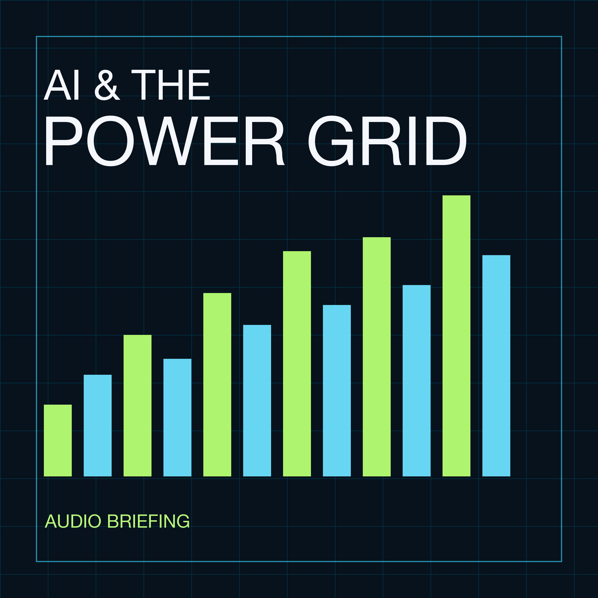

Episode 2 · 1 hr 17 min
AI Is Swallowing the Power Grid
A deep dive into how AI data centers are reshaping electricity demand and testing the power grid.
Download the audio
Long-form explorations of the electricity infrastructure behind the AI boom—and why power may be its hardest constraint.
Open RSS feedA deep dive into how AI data centers are reshaping electricity demand and testing the power grid.
Download the audioAn exploration of why electricity supply, transmission, and grid capacity may constrain AI growth.
Download the audio